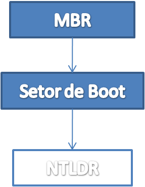
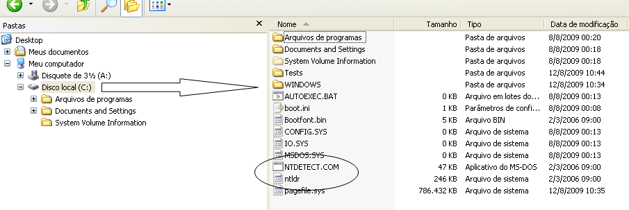
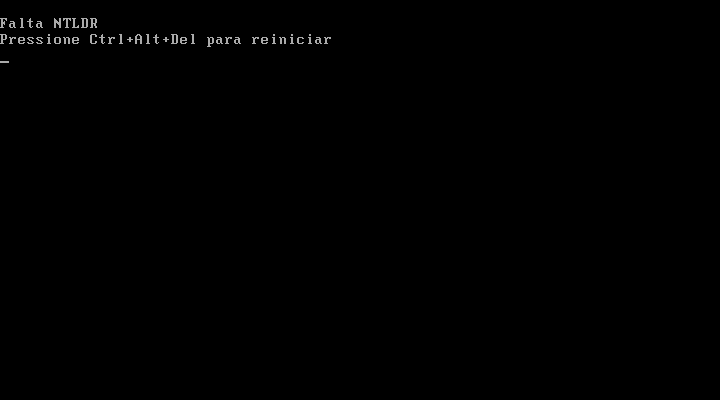

# Transparente
Caloni, 2009-09-01 <quotes> <self> <now> [up] [copy]Descarte uma reação negativa deixando tudo passar através de você.
Tolle, Eckhart (O Poder do Agora, 1997)
# O boot no Windows: pré-NTLDR
Caloni, 2009-09-09 <computer> [up] [copy]Conforme fui estudando para recordar os momentos sublimes do boot do Windows me deparei com o artigo mais "espetaculoso" de todos os tempos sobre esse assunto, parte integrante do livro Windows Internals e escrito pelo nada mais nada menos Mark Russinovich: **Boot Process**, no capítulo 5, "Startup and Shutdown".
O meu primeiro artigo sobre o boot sem Windows foi 80% escrito com o que eu já sabia de cabeça de tanto [mexer na MBR] e de tanto [depurar o processo de boot em 16 bits]. Os artigos posteriores seriam escritos com uma pitada do que sei mais a "inspiração" da minha pesquisa. Apesar de não parecer pouco para os que não sabem inglês, deixa a desejar para os que sabem (boa parte dos meus leitores, imagino).
Nesse caso decidi salpicar a explicação com uma boa dose de _reversing_ para aproveitarmos a caminhada e fuçarmos um pouco no funcionamento interno dos componentes de boot e ver no que dá. Antes de começar, porém, aviso que este não é um tratado sobre o sistema de boot. Eu diria que é apenas o resultado de algumas mexidas inconsequentes pelo _disassembly _do código de boot. Espero encontrar alguém tão curioso (ou mais) do que eu que compartilhe o que achou de todo esse processo. Antes de mais nada um mapinha para vermos até onde chegamos:
Pelo visto esse foi só o começo. O próximo passo é saber como do setor de boot chegamos ao NTLDR. O que não é nenhum segredo, uma vez que o NTLDR é um arquivo que fica na pasta raiz do sistema de arquivos. Como todos sabemos, qualquer assembly 16 bits de 400 bytes de tamanho consegue ler um arquivo de 250 KB na memória e executá-lo.
Se o NTLDR não conseguir ser encontrado, o seguinte erro será exibido:
Que usuário merece ver isso?
Bom, se ele soubesse analisar o assembly do setor de boot, seria fácil entender essa mensagem. E analisar o assembly é simples demais, quase tão simples quanto entender a mensagem acima. Tudo que precisamos é do programa **Debug 16 bits**, como o que já vem com o Windows ou aquele mais turbinado d[o FreeDOS].
Podemos usar o Debug 16 bits para abrir o setor de boot salvo em algum arquivo e analisá-lo. Esse "salvo em algum arquivo" nós podemos obter usando o HxD, um sofware bom demais que eu uso quase todos os dias da minha vida, ou para analisar os primeiros setores do disco ou ler arquivos binários que caem na minha caixa de e-mails.
Eu não vou explicar como salvar um setor do disco em um arquivo. Pelamordedeus, isso é fácil demais. É só fuçar que se acha um jeito.
Se bem que, como esse é um quase-tutorial, vão abaixo apenas algumas dicas:
- no primeiro setor do disco de boot, podemos encontrar a tabela de partições;
- nessa tabela, a partição ativa é a que começa com 0x80;
- existe um campo onde é possível obter o offset de onde está o primeiro setor dessa partição (em setores);
- uma simples conversão de Little Endian e de hexadecimal para decimal nos retorna o número do setor que precisamos;
- o próprio HxD nos consegue levar para esse setor, de onde podemos selecioná-lo e salvá-lo em um arquivo!
Isso é tudo o que você precisa para fazer engenharia reversa do setor de boot. Bom divertimento!
Análise estática x análise dinâmica
Existem duas formas que conheço para analisar o _disassembly _de um setor de boot pelo Debug. Para os que gostam de aventuras radicais (RPG em modo texto?) existe a análise dinâmica, que consiste em digitar no prompt do DOS o comando Debug e o nome do arquivo salvo com o setor de boot. O primeiro comando u irá desmontar os primeiros bytes do setor (e, portanto, as primeiras instruções). Eu costumo fazer isso para uma visão geral de cinco minutos.
A segunda forma de análise que exixte é para os preguiçosos que não conseguem fazer tudo no mesmo dia e optam por salvar o dump do disasssembly em um segundo arquivo. Para realizar essa proeza usando o Debug não é preciso mais que três neurônios:
- digite em um arquivo chamado u.bat o seguinte conteúdo:
u 100 400 q
- rode o debug como a linha abaixo:
debug < u.bat > a.asm
- Pronto! Temos um a.asm com toda a saída do setor de boot. Agora podemos analisá-la e editá-la:
; Salto inicial
0CDD:0100 EB52 JMP 0154
; Esses são dados que percebi que são usados pelo código, então copiei do HxD
Offset(h) 00 01 02 03 04 05 06 07 08 09 0A 0B 0C 0D 0E 0F
00000000 4E 54 46 53 20 20 20 20 00 02 08 00 00 NTFS .....
00000010 00 00 00 00 00 F8 00 00 3F 00 FF 00 00 20 3F 01 .....ø..?.ÿ.. ?.
00000020 00 00 00 00 80 00 80 00 FF 1F 03 00 00 00 00 00 ....¿.¿.ÿ.......
00000030 55 21 00 00 00 00 00 00 02 00 00 00 00 00 00 00 U!..............
00000040 F6 00 00 00 01 00 00 00 8E 4F 78 94 71 78 94 5C ö.......¿Ox¿qx¿\
00000050 00 00 00 00 ....
; Inicializa pilha e registradores
0CDD:0154 FA CLI
0CDD:0155 33C0 XOR AX,AX
0CDD:0157 8ED0 MOV SS,AX
0CDD:0159 BC007C MOV SP,7C00
0CDD:015C FB STI
0CDD:015D 68C007 PUSH WORD 07C0
0CDD:0160 1F POP DS
0CDD:0161 1E PUSH DS
0CDD:0162 686600 PUSH WORD 0066
0CDD:0165 CB RETF
; Confere assinatura 'NTFS' inicial
0CDD:0166 88160E00 MOV [000E],DL
0CDD:016A 66813E03004E5446
53 CMP DWORD PTR [0003],5346544E
0CDD:0173 7515 JNZ 018A
; Confere instalação do disco
0CDD:0175 B441 MOV AH,41
0CDD:0177 BBAA55 MOV BX,55AA
0CDD:017A CD13 INT 13
0CDD:017C 720C JB 018A
0CDD:017E 81FB55AA CMP BX,AA55
0CDD:0182 7506 JNZ 018A
0CDD:0184 F7C10100 TEST CX,0001
0CDD:0188 7503 JNZ 018D
0CDD:018A E9DD00 JMP 026A
; Pega os parâmetros do disco
0CDD:018D 1E PUSH DS
0CDD:018E 83EC18 SUB SP,+18
0CDD:0191 681A00 PUSH WORD 001A
0CDD:0194 B448 MOV AH,48
0CDD:0196 8A160E00 MOV DL,[000E]
0CDD:019A 8BF4 MOV SI,SP
0CDD:019C 16 PUSH SS
...
0CDD:01BE 2BC8 SUB CX,AX
0CDD:01C0 66FF061100 INC DWORD PTR [0011]
; Loop de leitura do disco
0CDD:01C5 03160F00 ADD DX,[000F]
0CDD:01C9 8EC2 MOV ES,DX
0CDD:01CB FF061600 INC WORD PTR [0016]
0CDD:01CF E84B00 CALL 021D
0CDD:01D2 2BC8 SUB CX,AX
0CDD:01D4 77EF JA 01C5
; O que será isso? RFIL não nos diz nada...
0CDD:01D6 B800BB MOV AX,BB00
0CDD:01D9 CD1A INT 1A
0CDD:01DB 6623C0 AND EAX,EAX
0CDD:01DE 752D JNZ 020D
0CDD:01E0 6681FB54435041 CMP EBX,41504354
0CDD:01E7 7524 JNZ 020D
0CDD:01E9 81F90201 CMP CX,0102
0CDD:01ED 721E JB 020D
; Algum tipo de inicialização
0CDD:01EF 16 PUSH SS
0CDD:01F0 6807BB PUSH WORD BB07
0CDD:01F3 16 PUSH SS
0CDD:01F4 68700E PUSH WORD 0E70
0CDD:01F7 16 PUSH SS
0CDD:01F8 680900 PUSH WORD 0009
0CDD:01FB 6653 PUSH EBX
0CDD:01FD 6653 PUSH EBX
...
Se fuçarmos por um tempo esse código podemos encontrar várias coisas interessantes, como por exemplo a mensagem que é exibida quando o setor de boot não contém a assinatura padrão 0x55 0xAA em seu final:

Outra coisa interessante é encontrar a sub-rotina que carrega blocos e blocos de conteúdo do disco na memória, utilizando-se para isso da interrupção 0x13 função 0x42: a leitura estendida!
; Leitura de blocos bem grandes no disco 0CDD:021D 6660 PUSHAD 0CDD:021F 1E PUSH DS 0CDD:0220 06 PUSH ES 0CDD:0221 66A11100 MOV EAX,[0011] 0CDD:0225 6603061C00 ADD EAX,[001C] 0CDD:022A 1E PUSH DS 0CDD:022B 666800000000 PUSH DWORD 00000000 0CDD:0231 6650 PUSH EAX 0CDD:0233 06 PUSH ES 0CDD:0234 53 PUSH BX 0CDD:0235 680100 PUSH WORD 0001 0CDD:0238 681000 PUSH WORD 0010 0CDD:023B B442 MOV AH,42 0CDD:023D 8A160E00 MOV DL,[000E] 0CDD:0241 16 PUSH SS 0CDD:0242 1F POP DS 0CDD:0243 8BF4 MOV SI,SP 0CDD:0245 CD13 INT 13 0CDD:0247 6659 POP ECX 0CDD:0249 5B POP BX 0CDD:024A 5A POP DX 0CDD:024B 6659 POP ECX 0CDD:024D 6659 POP ECX 0CDD:024F 1F POP DS 0CDD:0250 0F821600 JB 026A 0CDD:0254 66FF061100 INC DWORD PTR [0011] 0CDD:0259 03160F00 ADD DX,[000F] 0CDD:025D 8EC2 MOV ES,DX 0CDD:025F FF0E1600 DEC WORD PTR [0016] 0CDD:0263 75BC JNZ 0221 0CDD:0265 07 POP ES 0CDD:0266 1F POP DS 0CDD:0267 6661 POPAD 0CDD:0269 C3 RET
Enfim, todo esse assembly para fazer apenas uma coisa: achar o NTLDR na diretório-raiz da partição onde estamos, carregá-lo na memória e executá-lo. O que se passa a partir daí é o que iremos abordar na futura continuação. Não perca!
primeiro artigo sobre o boot sem Windows foi 80% escrito com o que eu já sabia de cabeça de tanto [mexer na MBR]: http://www.caloni.com.br/depuracao-da-mbr
primeiro artigo sobre o boot sem Windows foi 80% escrito com o que eu já sabia de cabeça de tanto [mexer na MBR] e de tanto [depurar o processo de boot em 16 bits]: http://www.caloni.com.br/debug-da-bios-com-o-softice-16-bits
aquele mais turbinado d[o FreeDOS]: http://www.freedos.org/cgi-bin/lsm.cgi?mode=lsm&lsm=base/debug.lsm
[2009-08] [2009-11]